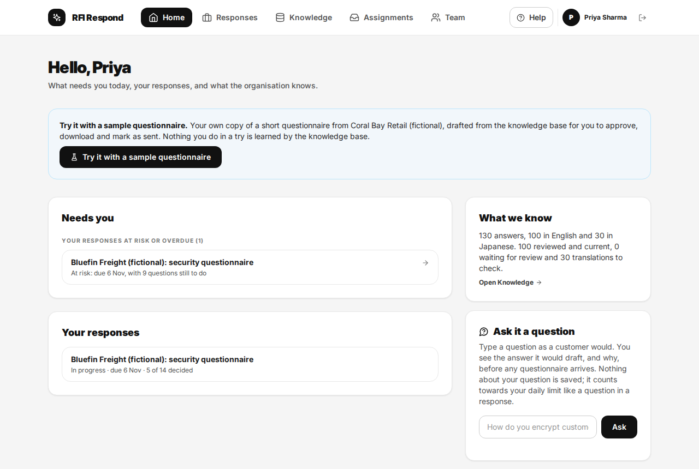
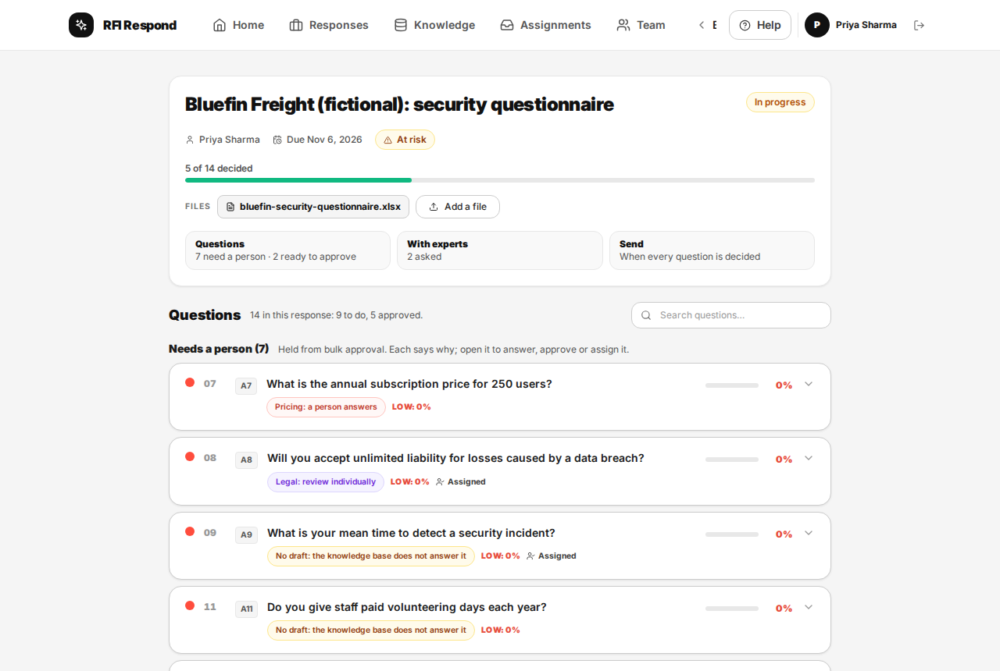
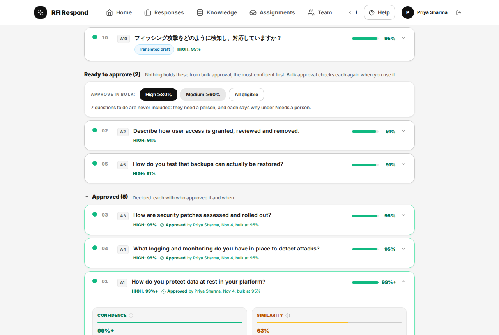
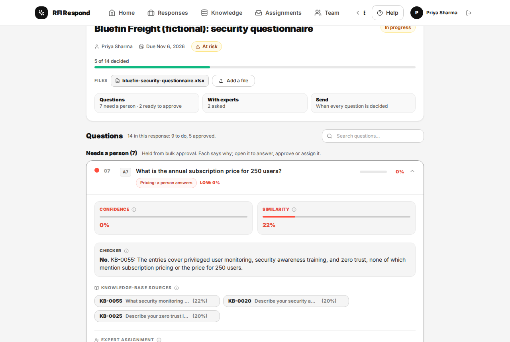
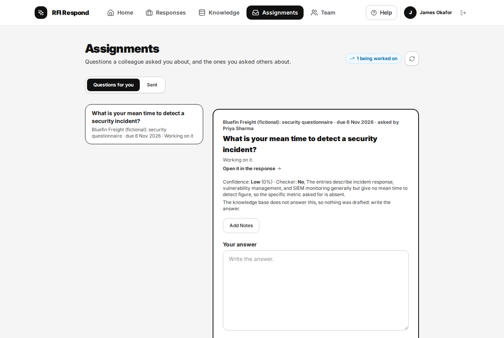
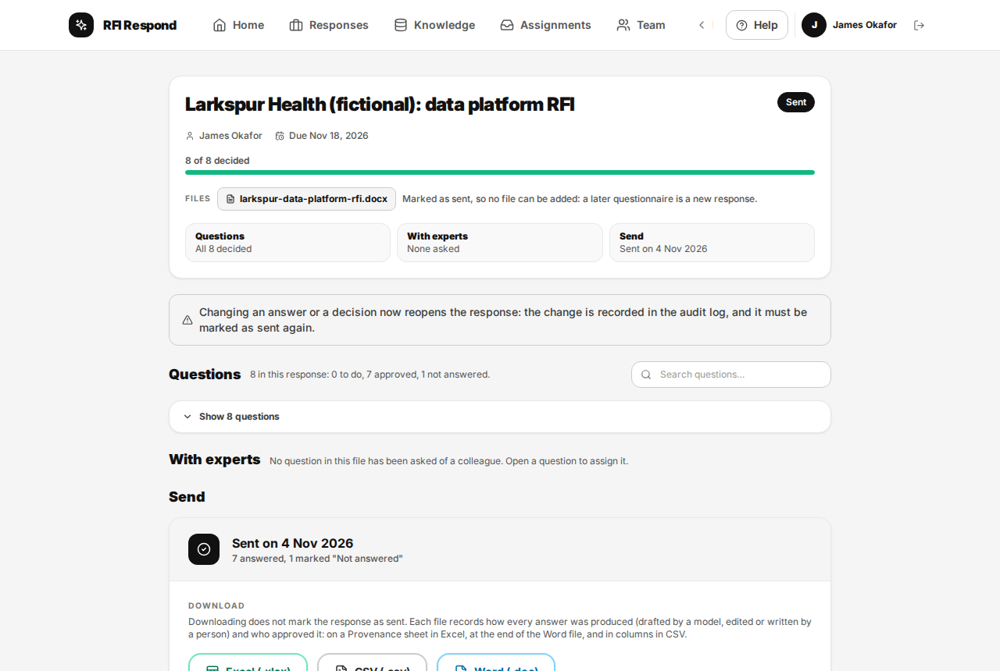
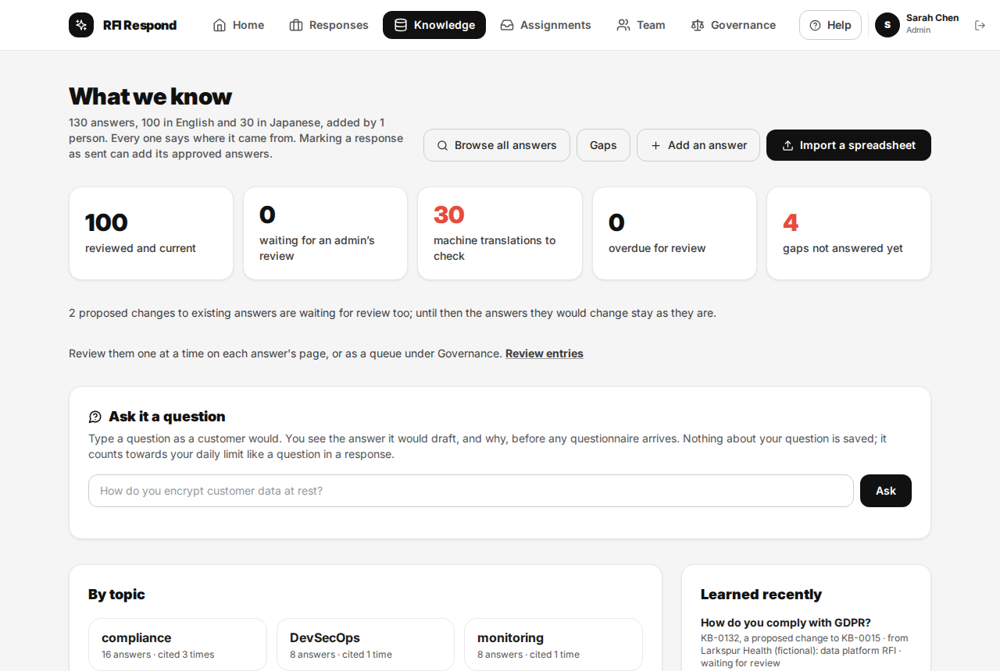
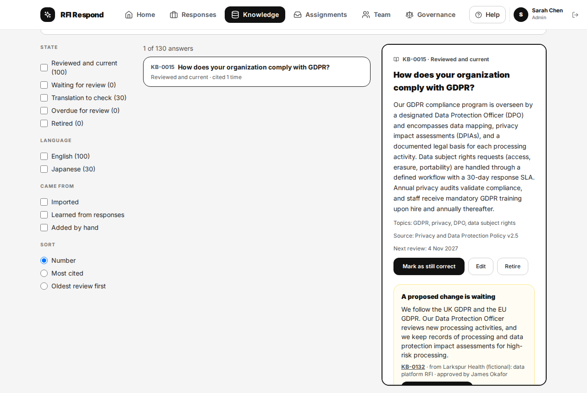
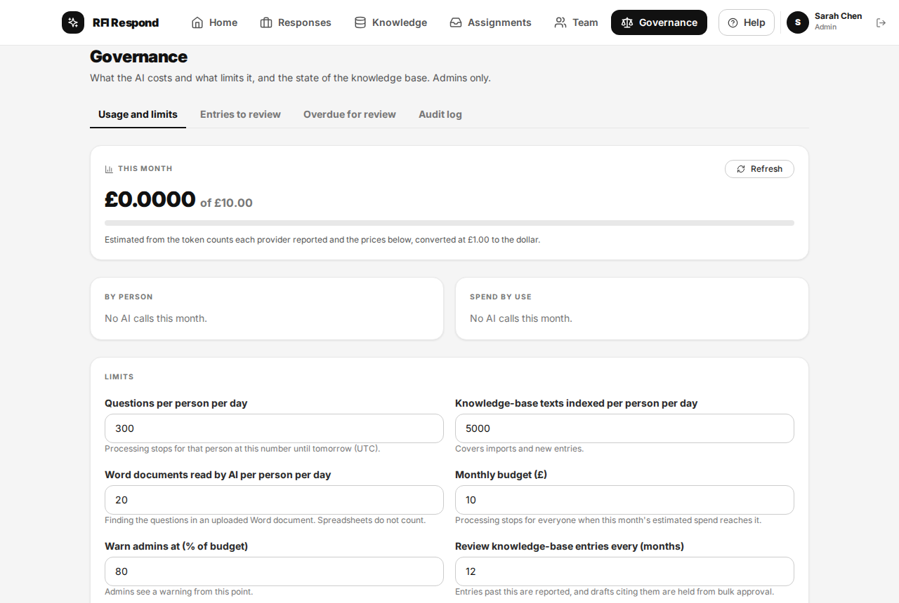

RFI Respond, screen by screen
RFI Respond answers procurement questionnaires from an organisation's own knowledge base. This walkthrough follows one response through the tool and marks four things on each screen: what the AI does, where a person decides, the guardrails, privacy, and security design, and how each part was tested. Use the filter to follow one thread at a time; select a numbered marker to find its note.
The screens are from the build of 4 November 2026 (Sprint 24), taken by the browser tests on the synthetic demo data in the repository. Company names are fictional, and the drafts were recorded from a real run of the pipeline.
- What needs you today
- A response, and what each question needs
- Ready to approve, in bulk, with a name on every decision
- A question the model is not allowed to answer
- A colleague's question, answered on one screen
- Sent, and the record of what was sent
- What the organisation knows
- One answer's story
- Cost, limits, and review
- How it was tested
What needs you today
Everyone lands on Home: what needs them today, the responses they own, and what the organisation knows. A visitor can try the whole job on a sample questionnaire of their own.

Swipe the screenshot sideways to see all of it.
- 1Human in the loop
At risk, with the reason. A response owner sees her responses that are at risk or overdue first, with why: here, due 6 November with nine questions still to do. Each response belongs to one named person, who decides what is sent.
- 2Guardrails, privacy, and security
A try is never learned. Try it makes the visitor their own response from a short questionnaire from a fictional company, drafted with the real AI. The database learns nothing from a try, counts none of its questions as gaps, refuses to let a try be handed to someone else, and allows five tries a person a day.
- 3How it was tested
Tried with the real AI on every staging run. Each run on the staging copy drafts a try with the real models and checks it end to end: the holds and their reasons, bulk approval, the download, and nothing learned.
- 4Human in the loop
What the organisation knows, at a glance. How many answers there are, in which language, and how many are reviewed and current, waiting for review, or machine translations still to check.
- 5AI capability
Ask it a question. Anyone can type a question as a customer would and see the answer the tool would draft, with its confidence and sources, through the same pipeline as a response. Nothing about the question is saved.
A response, and what each question needs
A response's page reads like its card: its owner, due date and progress, its files, and three stages: Questions, With experts, and Send. The questions are grouped by what they need, one reason each.

Swipe the screenshot sideways to see all of it.
- 1Human in the loop
One owner, one due date, one progress bar. The header speaks for the whole response, across every file a customer sent: since Sprint 24 a response's questions are one list, filtered by file if wished, approved in bulk and marked as sent once.
- 2Human in the loop
The job in three stages. Questions, then the colleagues asked to help, then sending: each stage says what it holds, so the owner can see where the work stands without opening a question.
- 3Guardrails, privacy, and security
Held, and each says why. Questions under Needs a person are never approved in bulk. Each card shows one reason first, in plain words, so nothing is held without an explanation.
- 4Guardrails, privacy, and security
Pricing is a person's. Pricing is never drafted, never bulk-approved, and never learned into the knowledge base, because prices go stale and are the organisation's to set.
- 5How it was tested
The gate was tested before it was trusted. Rules and a classifier together caught 100 of 100 pricing and legal questions in the evaluation set. 7 of 70 harmless lookalikes were held by mistake, an error that falls on the side of a person.
- 6Guardrails, privacy, and security
Legal questions are always individual. A question that would commit the organisation legally or contractually is flagged and reviewed one at a time, whatever its score.
- 7AI capability
The tool says when it does not know. When the knowledge base does not answer a question, nothing is drafted, and the card says so rather than producing something plausible.
- 8Human in the loop
Asked of a colleague. Questions the owner cannot answer are assigned to a colleague, suggested from their stated expertise and from who wrote or approved similar answers (screen 5).
Ready to approve, in bulk, with a name on every decision
Drafts nothing holds are listed most confident first, with the bulk bar. Approved answers carry who approved them, when, and how.

Swipe the screenshot sideways to see all of it.
- 1Human in the loop
Bulk approval, as a recorded decision. The owner can approve every draft at or above a chosen confidence in one action. It is still a person's decision, recorded with who made it, when, and at what threshold.
- 2Guardrails, privacy, and security
What bulk approval can never include. Pricing, legal, and translated questions; anything not fully checked; drafts citing an unreviewed, overdue, or replaced entry; a "partly" verdict; and anything without calibrated confidence or a draft. The database enforces this, and checks each cited entry again when bulk approval runs.
- 3AI capability
Japanese questions, answered from English knowledge. Matching works across languages: the right entry came back in the top five for every Japanese test question asked against English entries. The draft is written in Japanese.
- 4Guardrails, privacy, and security
Translations are always reviewed. A translated draft is labelled as such and never bulk-approved; a person accepts it one at a time.
- 5How it was tested
Calibration, checked out of sample. Five-fold cross-validation gave a calibration error of 0.047, and no near miss (on topic, but not answered) reached the 80% bulk line: 0 of 33.
- 6Human in the loop
Who approved it, when, and how. Every accepted answer records the person, the date, and the method: here, a bulk approval at the 95% threshold.
- 7AI capability
Confidence that means what it says. The figure is calibrated on the evaluation set: the measured chance the knowledge base answers the question. It is shown as "99%+" at the top, never as certainty.
- 8AI capability
Similar is not the same as answered. Raw similarity is shown alongside (63% here), because an entry on the same topic is not necessarily an answer. That is why there is a checker.
A question the model is not allowed to answer
A pricing question is caught before drafting. There is no draft to approve, and the checker explains why the knowledge base does not cover it anyway.

Swipe the screenshot sideways to see all of it.
- 1Guardrails, privacy, and security
Held before drafting. The gate runs before the drafter, so a pricing question never reaches it. The card says who answers: a person.
- 2How it was tested
Attacked with gate evasion. The red team tried to get pricing questions past the gate, in English and Japanese, by disguising or instructing around them. All were held.
- 3AI capability
A plain reason, even for a "no". A separate Claude call reads the matched entries and says whether they answer the question, yes, partly, or no, with a reason a person can check.
- 4AI capability
The entries that were considered. The closest entries and their similarity are listed, so a person can see what the tool looked at before deciding.
A colleague's question, answered on one screen
A specialist sees the questions they were asked in Assignments, and answers, approves, or hands one back without opening the response.

Swipe the screenshot sideways to see all of it.
- 1Human in the loop
Who asked, for which response, by when. Each question arrives with the response it belongs to, its due date, and the person who asked.
- 2AI capability
What the tool already knows. The colleague sees the tool's confidence and the checker's reason, here that the knowledge base gives no figure, so they know why they were asked.
- 3Human in the loop
Their answer is the decision. Someone asked may write and approve the answer. The owner sees it on the response at once and can use it, change it, or decide otherwise.
- 4Guardrails, privacy, and security
Each person sees their own work. Who may read or change what is enforced in the database for every role, so the rules hold even if someone calls the API directly. An answer is saved only while the question is still to do.
- 5How it was tested
Seen failing when broken. This is a step of the end-to-end browser test. When the colleague's Approve was broken on purpose on a throwaway branch, the test failed here, naming the step.
Sent, and the record of what was sent
The tool never sends anything to the customer. Downloading produces the files the owner sends; Mark as sent records it, and is the moment the knowledge base learns.

Swipe the screenshot sideways to see all of it.
- 1Guardrails, privacy, and security
A record, not a draft. Once a response is marked as sent, no file can be added to it, and the page says why: a later questionnaire is a new response. The database refuses it too, even mid-send.
- 2Human in the loop
A change reopens it. Changing an answer after sending is recorded in the audit log, and the response must be marked as sent again before it counts as sent.
- 3Human in the loop
Marked as sent by a person. Mark as sent says beforehand exactly what it will do, then records it with the person's name and the time, and closes any open assignments.
- 4Human in the loop
Provenance in every file. Each download records how every answer was produced (drafted by a model, edited, or written by a person), with which model and prompt version, and who approved it.
- 5How it was tested
Spreadsheet formula injection, tested. Excel cells are written as text, and CSV cells that start with a formula character are neutralised, so a planted formula never runs. A red-team case tried it.
What the organisation knows
The knowledge base is a place of its own: what it holds and in what state, what it could not answer in recent responses, and what it learned.

Swipe the screenshot sideways to see all of it.
- 1Human in the loop
Every answer says where it came from. Imported, added by hand, or learned from a response, with who approved it and when it is next due for review.
- 2Guardrails, privacy, and security
A control against poisoning. Because the knowledge base learns, it is the obvious target for a bad answer. A member's addition goes in at once, but a draft citing it is never bulk-approved until an admin reviews it.
- 3Guardrails, privacy, and security
Machine translations, checked. Answers translated by machine are counted until a person checks them, and drafts from them are always reviewed one at a time.
- 4Guardrails, privacy, and security
Nothing stays current by default. Answers fall due for review 12 months after they were last checked; drafts citing an overdue answer are held from bulk approval.
- 5AI capability
Gaps: what it could not answer. Questions in recent responses that the knowledge base did not answer are listed with where each stands, so the next questionnaire starts from better material. Tries never count.
- 6Guardrails, privacy, and security
Nothing overwritten unseen. A proposed change to an existing answer waits for review, and until then the answer stays as it is.
- 7AI capability
Learned from each response. When a response is marked as sent, edited and person-written answers become entries linked to the response they came from. Pricing is never learned.
- 8How it was tested
The replacement threshold was measured. A sweep chose the similarity above which an answer may replace an entry: wrong replacements came to 1.9% of test questions (7 of 363), against a bar of 2%.
One answer's story
Every answer has a page of its own: its history, where it has been used, its other languages, and any change waiting for review.

Swipe the screenshot sideways to see all of it.
- 1AI capability
Find what was learned. Browse every answer by state, language, and where it came from, including those learned from responses.
- 2Human in the loop
Its source, and its next review. The page names the document an answer came from and the date it falls due for review.
- 3Human in the loop
Admins decide, nothing is deleted. An admin marks an answer still correct, edits it, or retires it. A retired answer can be restored, with its history.
- 4Guardrails, privacy, and security
A proposed change, side by side. An answer learned from a response that would replace this one is shown in full beside it, and changes nothing until an admin approves it.
- 5Human in the loop
Traced to a person. The proposal names the response it came from and who approved the answer there.
Cost, limits, and review
Admins see what the AI costs and the limits that stop spend running away. (The demo's recorded calls fall in an earlier month, so this month shows none.)

Swipe the screenshot sideways to see all of it.
- 1Guardrails, privacy, and security
Admins only. This page, and every admin action, is restricted by the database's access rules, which are tested as real users for every role.
- 2Guardrails, privacy, and security
A monthly budget. Processing stops for everyone when the month's estimated spend reaches the budget. Each question reserves its cost before it runs, so the cap holds under load.
- 3AI capability
Every call priced. Claude Haiku 5.5 checks, classifies, and drafts; voyage-4, or a local model, matches by meaning. Every call is recorded with its tokens and cost, by person and by use.
- 4Guardrails, privacy, and security
Daily limits per person. Questions processed, entries indexed, and Word documents read by AI each have a daily limit per person.
- 5How it was tested
Caps and roles, tested in the database. 438 database tests run every role against the access rules, approvals, learning, review, and caps, as real signed-in users.
How it was tested
The green notes above show where each part was tested. These are the tests behind them. Every figure is an estimate on small synthetic sets, with a 95% interval in the repository's evaluation reports.
Prompt injection, 37 attacks
Questions and knowledge-base entries are text written by other people, so they are passed to the model as data, never as instructions. The red team planted instructions in 32 questions (each with a clean twin) and 5 entries.
Does the faithfulness judge catch a lie?
Drafts were judged faithful to their sources, but a judge that has only seen faithful drafts proves little. So unsupported claims were planted into 95 faithful drafts to see whether it would notice.
Result. Caught 95 of 95, with no false alarms on the 37 unchanged drafts. The plants came from four fixed rules, so a model's own mistakes may be harder to spot.Files are treated as untrusted
Spreadsheets and Word documents are opened in the browser with size and decompression limits. The tests include a zip bomb, a macro-enabled .docm file, a file renamed to .docx, and a script tag hidden in the text.
Result. All refused or kept as plain text. Four Word documents carrying planted instructions changed nothing in the questions found.Every role, as a real user
Every rule on who may read or change what lives in the database, so it holds even with the public key in an attacker's hands. CI also searches the built app for any key that should not be there.
Result. 438 database tests, run against row-level security as real signed-in users, alongside 1,173 unit tests.Every agreed case, as a person would use it
Since Sprint 20 the test cases agreed before each sprint run as browser tests on every push: on a local copy, and on a hosted staging copy where the real models draft a sample questionnaire. A separate AI agent checks that the tests prove the cases. Each sprint is signed off by the product owner from a page of recordings, and the live demo deploys only after his approval.
Result. 37 browser tests, among them the whole job end to end, from upload to the colleague's answer learned. Broken on purpose at one step, it failed there and named it.Code reviewed by something that did not write it
From Sprint 2 onwards, a separate AI agent that had not seen the reasoning reviewed each sprint's changes for security and correctness.
Result. In Sprint 24 it found two medium findings: a file or a question added while a response was being marked as sent could leave it called sent with work still to do. Both were fixed and tested with two database connections at once. Findings are fixed with a test, or recorded as a residual and added to the backlog.Measured, with what did not pass
Every published figure has a 95% interval and comes from an evaluation that can be re-run with one command.
Result. Calibration error 0.047 and 0 of 33 near misses at the bulk line. The checker still changes its verdict for 7.2% of questions when asked again, against a bar of 5%; that residual is accepted because only 1.7% crossed the bulk line.The full case study (PDF) ↓The evaluation reports on GitHub ↗The safety techniques behind it →